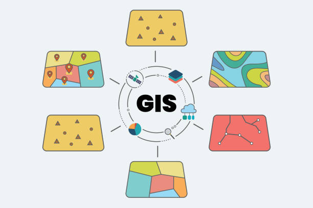

My Services
Land Survey
Accurate land measurements, boundary marking, and topographic surveys using advanced tools and GIS technologies.

GIS Mapping
Creating digital maps and spatial analysis to support decision-making in planning, agriculture, and environmental management.
Research Assistance
Helping with data collection, analysis, report writing, and GIS-related research projects.

Web & App Development
Building responsive websites, web applications, and mobile apps with modern design and functionality.
Environmental Services
Environmental impact assessments, sustainability consulting, and natural resource management solutions.